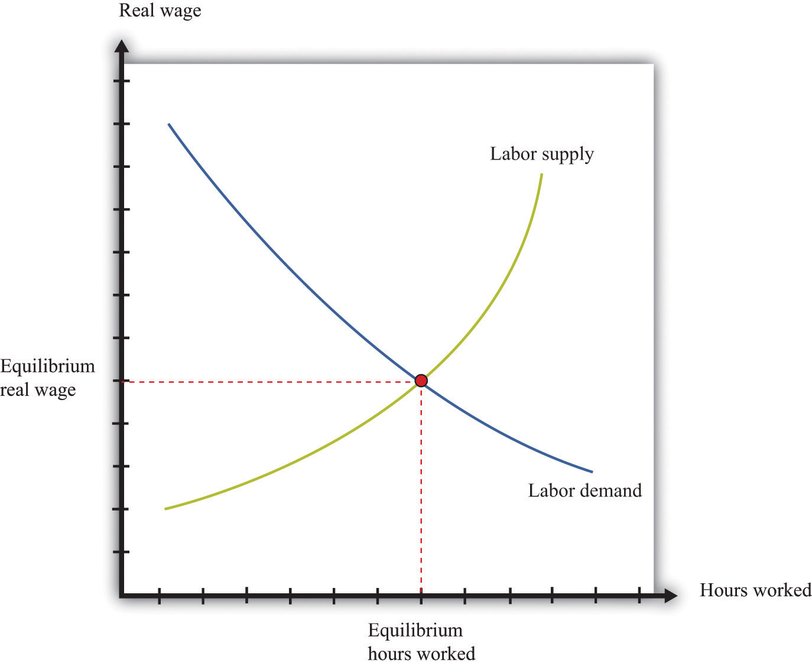
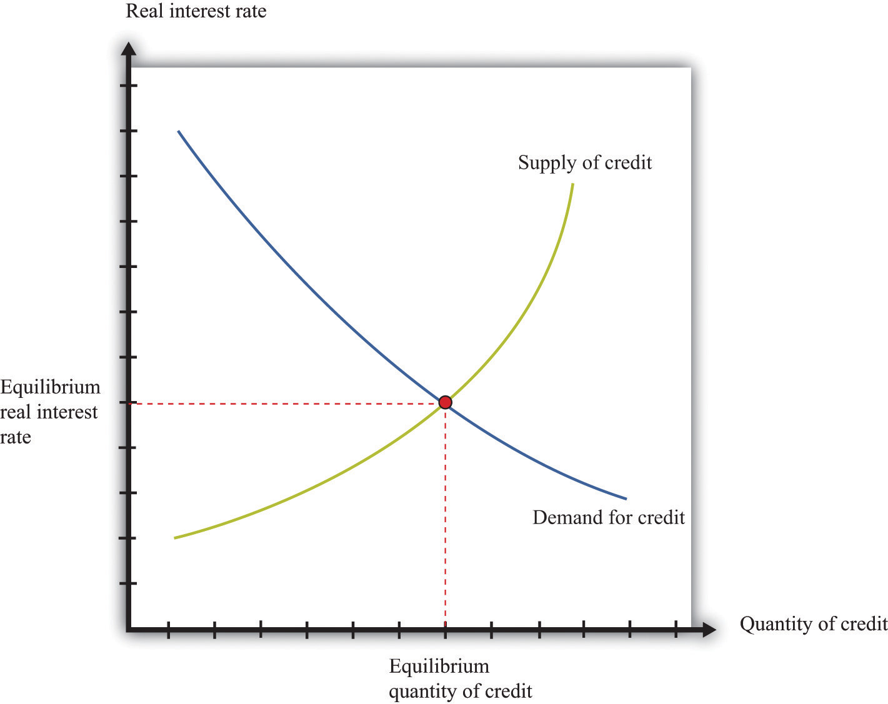

After you have read this section, you should be able to answer the following questions.
We begin by presenting a framework to highlight the link between money growth and inflation over long periods of time.The framework complements our discussion of inflation in the short run, contained in Chapter 25 "Understanding the Fed". The quantity theory of moneyA relationship among money, output, and prices that is used to study inflation. is a relationship among money, output, and prices that is used to study inflation. It is based on an accounting identity that can be traced back to the circular flow of income. Among other things, the circular flow tells us that
nominal spending = nominal gross domestic product (GDP).The “nominal spending” in this expression is carried out using money. While money consists of many different assets, you can—as a metaphor—think of money as consisting entirely of dollar bills. Nominal spending in the economy would then take the form of these dollar bills going from person to person. If there are not very many dollar bills relative to total nominal spending, then each bill must be involved in a large number of transactions.
The velocity of moneyNominal GDP divided by the money supply. is a measure of how rapidly (on average) these dollar bills change hands in the economy. It is calculated by dividing nominal spending by the money supply, which is the total stock of money in the economy:
If the velocity is high, then for each dollar, the economy produces a large amount of nominal GDP.
Using the fact that nominal GDP equals real GDP × the price level, we see that
And if we multiply both sides of this equation by the money supply, we get the quantity equationAn equation stating that the supply of money times the velocity of money equals nominal GDP., which is one of the most famous expressions in economics:
money supply × velocity of money = price level × real GDP.Let us see how these equations work by looking at 2005. In that year, nominal GDP was about $13 trillion in the United States. The amount of money circulating in the economy was about $6.5 trillion.In Chapter 24 "Money: A User’s Guide", we discussed the fact that there is no simple single definition of money. This figure refers to a number called “M2,” which includes currency and also deposits in banks that are readily accessible for spending. If this money took the form of 6.5 trillion dollar bills changing hands for each transaction that we count in GDP, then, on average, each bill must have changed hands twice during the year (13/6.5 = 2). So the velocity of money was 2 in 2005.
Toolkit: Section 31.27 "The Circular Flow of Income"
You can review the circular flow of income in the toolkit.
So far, we have just written a definition. There are two steps that take us from this definition to a theory of inflation. First we use the quantity equation to give us a theory of the price level. Then we examine the growth rate of the price level, which is the inflation rate.
In macroeconomics we are always careful to distinguish between nominal and real variables:
Prior to the Great Depression, the dominant view in economics was an economic theory called the classical dichotomyThe dichotomy that real variables are determined independently of nominal variables.. Although this term sounds imposing, the idea is not. According to the classical dichotomy, real variables are determined independently of nominal variables. In other words, if you take the long list of variables used by macroeconomists and write them in two columns—real variables on the left and nominal variables on the right—then you can figure out all the real variables without needing to know any of the nominal variables.
Following the Great Depression, economists turned instead to the aggregate expenditure modelThe relationship between planned spending and output. to better understand the fluctuations of the aggregate economy. In that framework, the classical dichotomy does not hold. Economists still believe the classical dichotomy is important, but today economists think that the classical dichotomy only applies in the long run.
The classical dichotomy can be seen from the following thought experiment. Start with a situation in which the economy is in equilibrium, meaning that supply and demand are in balance in all the different markets in the economy. The classical dichotomy tells us that this equilibrium determines relative prices (the price of one good in terms of another), not absolute prices. We can understand this result by thinking about the markets for labor, goods, and credit.
Figure 26.2 "Labor Market Equilibrium" presents the labor market equilibrium. On the vertical axis is the real wage because households and firms make their labor supply and demand decisions based on real, not nominal, wages. Households want to know how much additional consumption they can get by working more, whereas firms want to know the cost of hiring more labor in terms of output. In both cases, it is the real wage that determines economic choices.
Figure 26.2 Labor Market Equilibrium
Now think about the markets for goods and services. The demand for any good or service depends on the real income of households and the real price of the good or service. We can calculate real prices by correcting for inflation: that is, by dividing each nominal price by the aggregate price level. Household demand decisions depend on real variables, such as real income and relative prices.If you have studied the principles of microeconomics, remember that the budget constraint of a household depends on income divided by the price of one good and on the price of one good in terms of another. If there are multiple goods, the budget constraint can be determined by dividing income by the price level and by dividing all prices by the same price level. The same is true for the supply decisions of firms. We have already argued that labor demand depends on only the real wage. Hence the supply of output also depends on the real, not the nominal, wage. More generally, if the firm uses other inputs in the production process, what matters to the firm’s decision is the price of these inputs relative to the price of its output, or—more generally—relative to the overall price level.If you have studied the principles of microeconomics, the condition that price equals marginal cost is used to characterize the output decision of a firm. What matters then is the price of the input, relative to the price of output.
What about credit markets? The supply and demand for credit depends on the real interest rate. This means that those supplying credit think about the return they receive on making loans in real terms: although the loan may be stated in terms of money, the supply of credit actually depends on the real return. The same is true for borrowers: a loan contract may stipulate a nominal interest rate, but the real interest rate determines the cost of borrowing in terms of goods. The supply of and demand for credit is illustrated in Figure 26.3 "Credit Market Equilibrium".
Figure 26.3 Credit Market Equilibrium
The credit market equilibrium occurs at a quantity of credit extended (loans) and a real interest rate where the quantity supplied is equal to the quantity demanded.
Toolkit: Section 31.3 "The Labor Market", Section 31.24 "The Credit (Loan) Market (Macro)", and Section 31.8 "Correcting for Inflation"
You can review the labor market and the credit market, together with the underlying demand and supply curves, in the toolkit. You can also review how to correct for inflation.
The classical dichotomy has a key implication that we can study through a comparative statics exercise. Recall that in a comparative statics exercise we examine how the equilibrium prices and output change when something else, outside of the market, changes. Here we ask: what happens to real GDP and the long-run price level when the money supply changes? To find the answer, we begin with the quantity equation:
money supply × velocity of money = price level × real GDP.Previously we discussed this equation as an identity—something that must be true by the definition of the variables. Now we turn it into a theory. To do so, we make the assumption that the velocity of money is fixed. This means that any increase in the money supply must increase the left-hand side of the quantity equation. When the left-hand side of the quantity equation increases, then, for any given level of output, the price level is higher (equivalently, for any given value of the price level, the level of real GDP is higher).
What then changes when we change the money supply: output, prices, or both? Based on the classical dichotomy, we know the answer. Real variables, such as real GDP and the velocity of money, stay constant. A change in a nominal variable—the money supply—leads to changes in other nominal variables, but real variables do not change. The fact that changes in the money supply have no long-run effect on real variables is called the long-run neutrality of moneyThe fact that changes in the money supply have no long-run effect on real variables..
Toolkit: Section 31.16 "Comparative Statics"
You can find more details on how to conduct comparative static exercises in the toolkit.
How does this view of the effects of monetary policy fit with the monetary transmission mechanismA mechanism explaining how the actions of a central bank affect aggregate economic variables, in particular real GDP.?See Chapter 25 "Understanding the Fed". The monetary transmission mechanism explains that the monetary authority affects aggregate spending by changing its target interest rate.
Remember that the monetary authority changes interest rates through open-market operations. If it wants to boost aggregate spending, it does so by cutting interest rates, and it cuts interest rates by purchasing government bonds with money. An interest rate cut is equivalent to an increase in the supply of money, so the monetary transmission mechanism also teaches us that an increase in the supply of money leads to an increase in aggregate spending.There is one difference, unimportant here, which is that the monetary transmission mechanism does not necessarily suppose that the velocity of money is constant. The monetary transmission mechanism is useful when we want to understand the short-run effects of monetary policy. When studying the long run, it is easier to work with the quantity equation and to think about monetary policy in terms of the supply of money rather than interest rates.
Finally, a reminder: in the short run, the neutrality of money does not hold. This is because in the short run we assume stickiness of nominal wages and/or prices. In this case, changes in the nominal money supply will lead to changes in the real money supply. With sticky wages and/or prices, the classical dichotomy is broken.
We now use the quantity equation to provide us with a theory of long-run inflation. To do so, we use the rules of growth rates. One of these rules is as follows: if you have two variables, x and y, then the growth rate of the product (x × y) is the sum of the growth rate of x and the growth rate of y. We can apply this to the quantity equation:
money supply × velocity of money = price level × real GDP.The left side of this equation is the product of two variables, the money supply and the velocity of money. The right side is likewise the product of two variables. So we obtain
growth rate of the money supply + growth rate of the velocity of money = inflation rate + growth rate of output.We have used the fact that the growth rate of the price level is, by definition, the inflation rate.
Toolkit: Section 31.21 "Growth Rates"
You can review the rules of growth rates in the toolkit.
We continue to assume that the velocity of money is a constant.In fact, the velocity of money might also grow over time as a result of developments in the financial sector. Saying that the velocity of money is constant is the same as saying that its growth rate is zero. Using this fact and rearranging the equation, we discover that the long-run inflation rate depends on the difference between how rapidly the money supply grows and how rapidly output grows:
inflation rate = growth rate of money supply − growth rate of output.The long-run growth rate of output does not depend on the growth rate of the money supply or the inflation rate. We know this because long-run output growth depends on the accumulation of capital, labor, and technology. From our discussion of labor and credit markets, equilibrium in these markets is described by real variables. Equilibrium in the labor market depends on the real wage and not on any nominal variables. Likewise, equilibrium in the credit market tells us that the level of investment does not depend on nominal variables. Since the capital stock in any period is just the accumulation of past investment, we know that the stock of capital is also independent of nominal variables.
Therefore there is a direct link between the money supply growth rate and the inflation rate. The classical dichotomy teaches us that changes in the money supply do not affect the velocity of money or the level of output. It follows that any changes in the growth rate of the money supply will show up one-for-one as changes in the inflation rate. We say more about monetary policy later, but notice that there are immediate implications for the conduct of monetary policy:
Keep in mind that this is just a theory. The quantity equation holds as an identity. But the assumption of constant velocity and the statement that long-run output growth is independent of money growth are assertions based on a body of theory. We now look at how well this theory fits the facts.